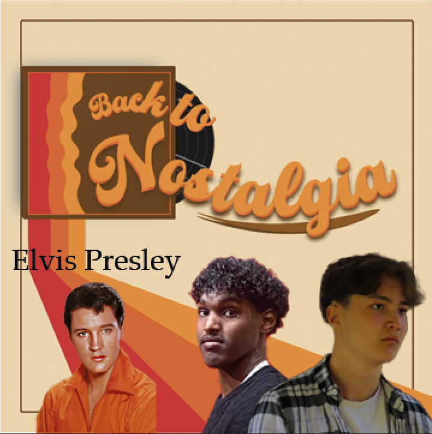

onze episodes
We hebben op onze home pagina een teaser video
onze artiesten
Wij geloven dat muziek meer is dan alleen geluid, het is een tijdmachine. Elke noot heeft een verhaal, en wij zijn hier om het samen met jou uit te pakken. Of je nu aan het jammen bent in je auto, of herinneringen ophaalt aan die zomer waarin dat ene nummer maar niet ophield met spelen op de radio, wij willen je terugbrengen naar die plek. Want laten we eerlijk zijn soms heeft het verleden gewoon betere melodieën. Zoals u hieronder ziet de artiesten die we dit seizoen gaan bespreken.
Michael Jackson
Elton John
Elvis Presly
Frank Sinatra
Marvin Gaye
the Beatles